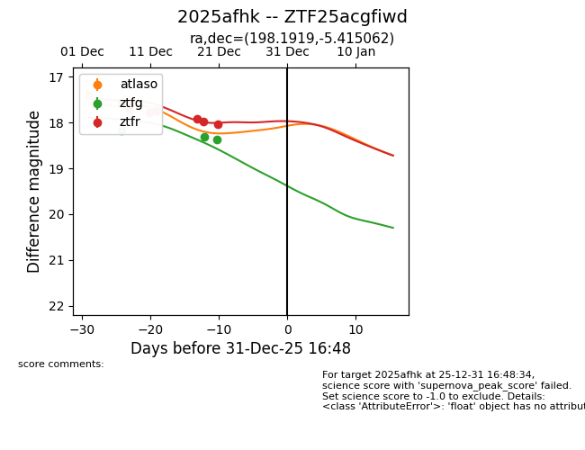
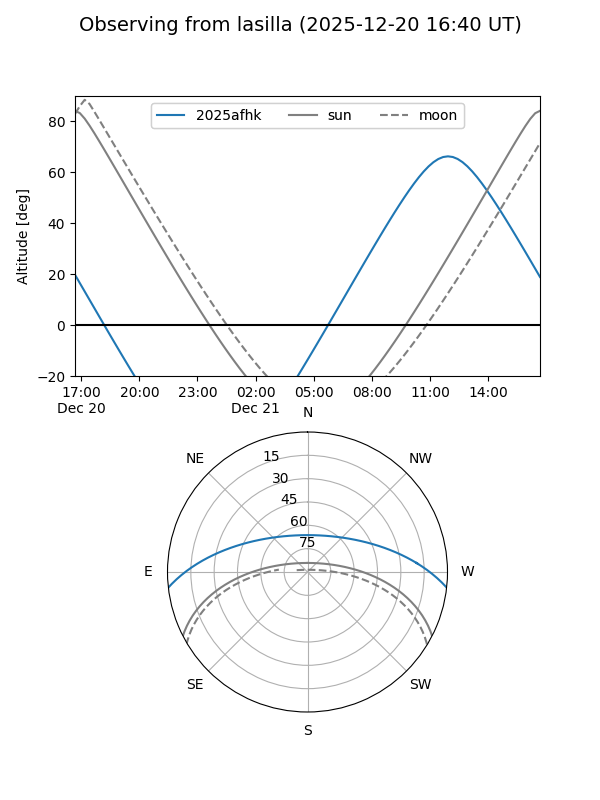
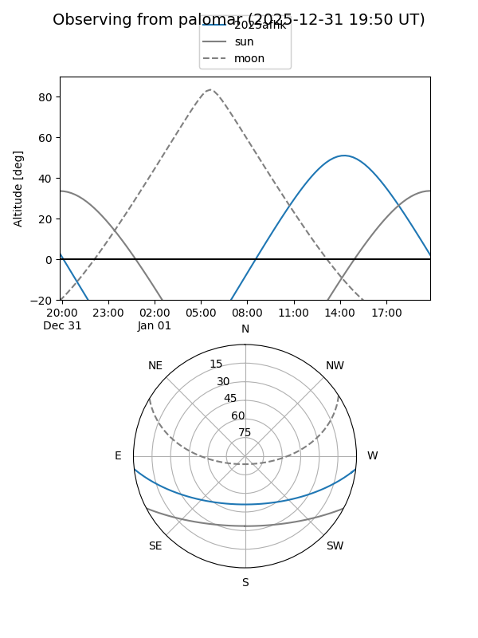
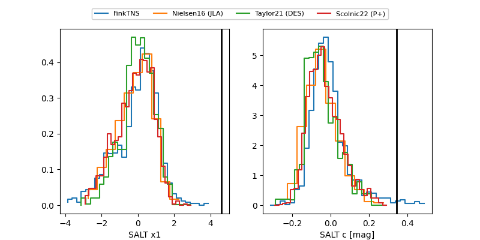

2025afhk
Target 2025afhk at 2025-12-21 12:42
Aliases and brokers:
FINK: fink-portal.org/ZTF25acgfiwd
Lasair: lasair-ztf.lsst.ac.uk/objects/ZTF25acgfiwd
ALeRCE: alerce.online/object/ZTF25acgfiwd
TNS: wis-tns.org/object/2025afhk
YSE: ziggy.ucolick.org/yse/transient_detail/2025afhk
alt names
ZTF25acgfiwd (ztf,fink_ztf)
2025afhk (tns,yse)
Coordinates:
equatorial (ra, dec) = 198.1919,-5.41506
equatorial (HMS+DMS) = 13:12:46.05,-05:24:54.22
galactic (l, b) = (312.7258,+57.05053)
Flags:
Photometry:
last atlaso=17.73, ztfg=18.36, ztfr=17.98
3 atlaso, 3 ztfg, 6 ztfr detections
Lightcurve

Visibility


Additional plots
